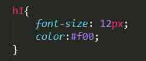

Dans cette article, nous faisons la proposition que la linguistique peut-être une clef de la description des languages informatiques tels que html et css. Nous illustrerons ceci en nous servant d'un concept linguistique élaboré par André Martinet :la double articulation. Nous nous efforcerons d'abord de le définir dans le domaine linguistique avant de le décliner dans le cadre des deux principaux langages web.
Revenir au sommet de la pageLa double articulation est un concept élaboré par André Martinet pour décrire le fonctionnement des langues naturelles. Tout langage est doublement articulé en ce qu'il se compose de deux séries d'éléments qui participent à la production du sens. Considérons la citation suivante:
Il ne faut pas se fier aux apparences. Beaucoup de gens n'ont pas l'air aussi bêtes qu'ils ne le sont réellement.
Cette phrase est composée de mots qui pris indépendamment les uns des autres ne véhiculent pas une signification équivalente. C'est donc que leur juxtaposition au sein d'une même phrase qui permet de générer du sens. En subsituant un mot à un autre on obtient un sens différent.
Il ne faut pas se fier aux apparences. Beaucoup de gens n'ont pas l'air aussi heureux qu'ils ne le sont réellement.
La seconde articulation se développe au sein des mots ou syntagmes. Ces syntagmes sont des unités linguistiques constituées de sons ou de la retranscription écrite de ces sons. Prenons l'exemple du mot Souris
.
Nous pouvons composer notre syntagme en plusieurs sons. Les sons pris indépendamment les uns des autres ne forment pas le même sens que lorsqu'ils sont agrégés. Le son r
, par exemple n'a aucun rapport avec le sens de Souris
, et même, ne veut rien dire en tant que tel, contrairement à ou
qui, en français peut s'écrire de deux manières différentes.
La seconde articulation est donc le fait que des sons différents agencés dans un certain ordre produisent un mot différent à condition que celui-ci existe. En effet,Série
et Souris
existent mais Sanri
n'existe pas.
Nous avons que la première articutlation permettait des permutations pour produire des phrases. Nous allons extrapoler cette définition au html. De même qu'une phrase est composée de mots, une page html est composée de balises. Soit le code suivant:
La balise h1 nous signale qu'il s'agit d'un titre. Mais je pourrais tout à fait avoir :
Dans ce dernier cas, ce n'est plus un titre, mais un paragraphe. Le choix de la balise html est donc une combinatoire qui permet de modifier la sémantique du contenu.
La similitude entre le choix de la balise html et la double articulation peut dès lors être poursuivie pour le cas du css. Celui-ci, comme on le sait déjà, ne s'intéresse qu'à la mise en forme des éléments qu'il pilote. Il ne s'agit donc plus de sémantique pour lequel le css nous est indifférent. Donc, la seconde combinatoire est purement visuelle, pour le h1, nous pouvons ainsi demander :

Il s'agit ici d'avoir une certaine taille de police et une certaine couleur de texte. Mais ces choix sont, comme pour la seconde articulation de Martinet, modifiable, par exemple :
Dans ce dernier cas, ma police sera plus petite et le texte d'une teinte différente.
Revenir au sommet de la pageDe même que remplacer un mot par un autre dans une phrase en modifie le sens, le choix d'une balise html au détriment d'une autre modifie la sémantique du contenu que cette balise encadre. Ceci vaut la première articulation. De même que la modification d'un son dans un mot peut modifier la nature de ce mot tant que celui-ci existe, la modification des règles du css produit un résultat visuel différent tant que la règle écrite respecte la syntaxe du css. Ceci vaut pour la deuxième articulation.
Revenir au sommet de la page